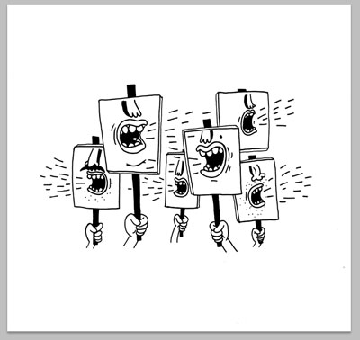
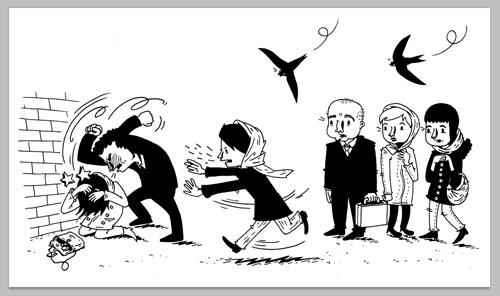
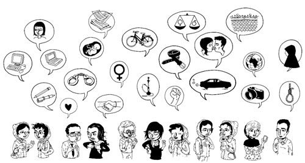

|
|

زنان و حق آزادی بیان در نمایشگاه گوتنبرگ
دو شنبه11 مهر 1390
در نمایشگاه بین المللی کتاب شهر گوتنبرگ در سوئد که همه ساله در ماه سپتامبر برگزار می شود پروین اردلان و اولا لارسمو، رییس انجمن قلم سوئد در گفتگویی با ادا مانگا محقق در تاریخ افکار و سردبیر بخش سیاسی تارنمای پرسپکتیو فمینیستی شرکت کرده و از حق آزادی بیان سخن گفتند. موضوع مورد بحث دفاع از حق آزادی بیان در دورانی است که از یک طرف این واژه برای توجیه حملات نژادپرستانه و مداخلات نظامی بکار گرفته می شود و از طرف دیگر یکی از پایه های اساسی پیش برنده انقلابات در عصر حاضر است.

در نمایشگاه بین المللی کتاب، نمایشگاه دیگری درباره آزادی بیان با عنوان «خودت را بیان کن» با موضوع آزادی بیان به نمایش درآمد، دراین نمایشگاه ، گوشه ای از فعالیت ها وکوشش های فردی و جمعی زنان در ایران نوشته پروین اردلان به نمایش در آمد، که روایت گرتلاش زنان ایران برای کسب حقوق برابر و حق آزادی بیان بودو یک کارتونیست سوئدی روایت ها را در قالب سه کارتون تصویرکرده بود. این نمایشگاه همچنین اثری از حنین شکرا روزنامه نگار سوریه ای، فیلوایکونیا شاعر کنیایی و مهمان شهر اسلوی نروژ رادر خود داشت. نمایشگاه که بصورت سیار است، قرار است 9 اکتبر سال جاری در شهو مالمو و سپس در شهرهای دیگر به نمایش گذاشته شود. پروین در این روایت ها شیوه های گوناگون نوشتاری و عملی را که زنان در ایران برای بیان خودشان، حرف هایشان و شکل دهی مقاومت هایشان به کار می گیرند تصویر کرده است..

بر اساس گزارش فمینیسم پرسپکتیو،پروین در گفتگویش اظهار داشت که به حاشیه راندن زنان و مهاجران پدیدهای جهانی است. اروپا از نارسائی های آزادی بیان رها نشده اگر چه این نارسا یی ها به همان شکلی که در ایران دیده می شود، بیان نمی شوند. هر چه یک گروه بیشتر به حاشیه رانده می شود به همان میزان نیز حق آزادی بیان نیز محدودتر می شود واین پدیده را می شود براحتی در پناهندگان فاقد مدارک هویتی در سوئد مشاهده کرد.

لارسمو یادآور شد که حق آزادی بیان چیزی است که همواره بایستی برای آن مبارزه کرد، این اصل مقدسی نیست به ما داده شده بلکه در همه جوامع و در همه دوران بایستی برای دفاع از آن مبارزه کرد. و البته آن حق آزادی بیانی که اردلان ار آن صحبت می کند، حق آزادی بیان به حاشیه رانده شدگان.
منبع: تارنمای سوئدی پرسپکتیو فمینیستی